library(tidyverse)
library(data.table)
library(xgboost)
library(knitr)
library(broom)
library(caret)
library(e1071)
library(kableExtra)
library(ggthemes)
library(DT)
library(glmnet)
options(scipen = 1, digits = 4)
cancer <- fread("data.csv")
cancer[, V33 := NULL]Cancer Data
Data Set
In this tutorial I’m going to predict whether a breast cancer tumor is benign or malignant. Using Wiscosin breast cancer data set available on Kaggle. The 30 predictors are divided into three parts first is Mean ( variables 3-13), Standard Error(13-23) and Worst(23-32) and each contain 10 parameter (radius, texture,area, perimeter, smoothness,compactness,concavity,concave points,symmetry and fractal dimension of the tumor). When predicting cancer breast tumor types there two types of cost;
- The cost of telling someone who has malignant tumor that they have benign these are the false negatives in this case someone might not seek medical help which is can cause death.
- Telling someone that they have malignant type of tumor but they don’t which is usually false positives. In this case you subject someone to unnecessary stress
So it’s highly desirable that our model has good accuracy $ f_1 score$ and high recall.
head(cancer) %>%
datatable(options = list(scrollX = TRUE)) Visualization and Feature selection
Percentage of women with malignant tumor
The percentage of women with malignant tumor is 37.26%(212 out 569) while the rest 62.74%(357) had benign tumors.
cancer[, .(freq = .N),
by = diagnosis] %>%
.[, perc := round(100 * freq/sum(freq), 2)] %>%
ggplot(aes(x=diagnosis, y=perc, fill = diagnosis)) +
geom_bar(stat = "identity", width = 0.5)+ theme_hc() +
geom_text(aes(x=diagnosis, y=perc, label = paste(perc, "%")),
position = position_dodge(width = 0.5),
vjust = 0.05, hjust = 0.5, size = 5)+
scale_fill_hc(name = "")+
labs(x = "Cancer Type",
y = "Percentage",
title = "Percentage of women with benign or malignant breast bancer")+
theme(legend.position = "none",
axis.title = element_text(size =12))
Boxplots
From the boxplots we can identify variables where we expect there is a significance difference between the two groups of cancer tumors. When using a boxplot if two distributions do not averlap or more than 75% of two boxplot do not overlap then we expect that there is a significance difference in the mean/median between the two groups. Some of the variables where the distribution of two cancer tumors are significantly different are radius_mean, texture_mean etc. The visible differences between malignant tumors and benign tumors can be seen in means of all cells and worst means where worst means is the average of all the worst cells. The distribution of malignant tumors have higher scores than the benign tumors in this cases.
cancerm <- melt(cancer[, -1, with = F], id.vars = "diagnosis")
ggplot(cancerm, aes(x = diagnosis, y = value))+
geom_boxplot() + facet_wrap(~variable, scales = "free_y")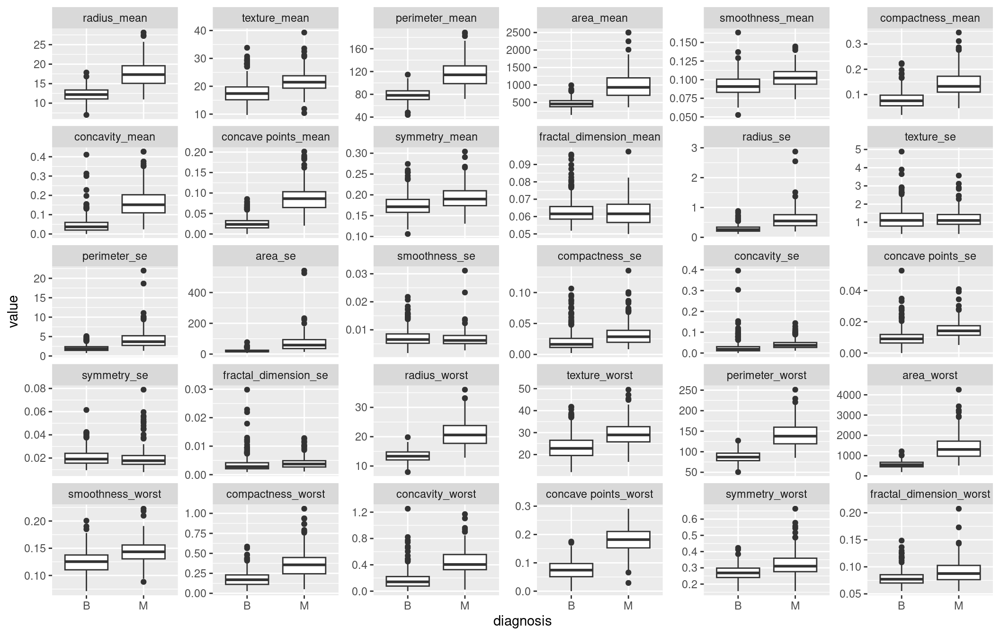
Features Scaling
We find that some variables are highly correlated. We can use principle component analysis for dimension reduction. Since variables are correlated it’s evident that we can use a smaller set of features to build our models.
cancer[, id := NULL]
predictors <- names(cancer)[3:31]
cancer[, (predictors) := lapply(.SD, function(x) scale(x)), .SDcols = predictors ]
cancer[, diagnosis := as.factor(diagnosis)]Correlation matrix
cor(cancer[, -(1:2), with = F]) %>%
datatable(options = list(scrollX = TRUE), style = "bootstrap4") Principle Component Analysis
Using the elbow rule we can use the first 5 principle components. Using 15 principle components we will have achieved al most 100% of the variance from the original data set.
pca <- prcomp(cancer[, predictors, with = F], scale. = F)Variance Explained
Since PCA forms new characteristics the variance explained plot shows the amount of variation of the original features captured by each principle component. The new features are simply linear combinations of the old features.
stdpca <- pca$sdev
varpca <- stdpca^2
prop_var <- varpca/sum(varpca)
prop_var * 100 [1] 43.706363 18.472237 9.716239 6.816736 5.676223 4.161723 2.292352
[8] 1.643434 1.363238 1.191515 1.011032 0.897368 0.832105 0.539193
[15] 0.323823 0.269517 0.198317 0.178851 0.153573 0.107095 0.102579
[22] 0.093821 0.082603 0.058725 0.053331 0.027514 0.022985 0.005110
[29] 0.002394sum(prop_var[1:15])[1] 0.9864Scree plot
Scree plot shows the variance explained by each principle component which reduces as the number of principle components increase.
plot(prop_var, xlab = "Principal Component",
ylab = "Proportion of Variance Explained",
type = "b", xlim = c(0, 30))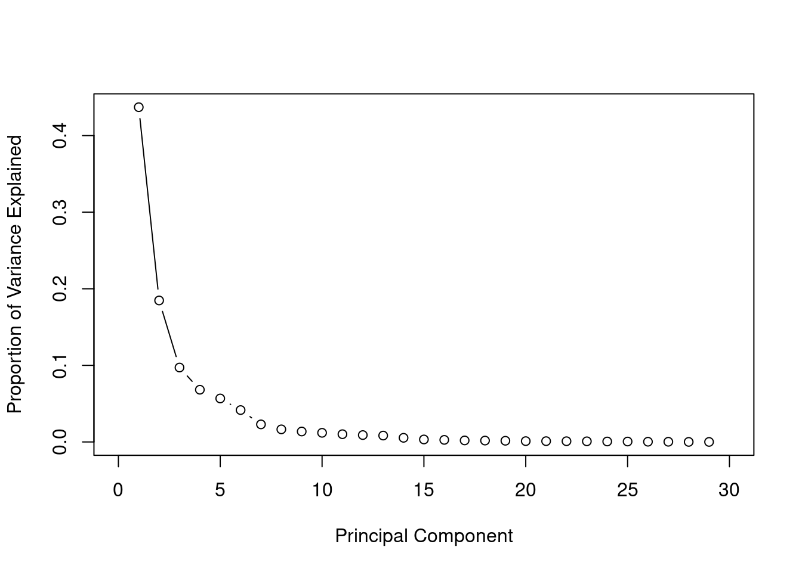
Cumulative Variance Explained
The cumulative of variance plot helps to choose the number of features based on the amount of variation from original data set you want captured. In this case, I wanted to use number of principle components that capture almost 100% of the variation. After trying with different number of principle components I found out that the accuracy of the models did not increase after the 15th principle components.
cum_var <- cumsum(prop_var)
plot(cum_var, xlab = "Principal Component",
ylab = "Cumulative Proportion of Variance Explained",
type = "b", xlim = c(0, 30))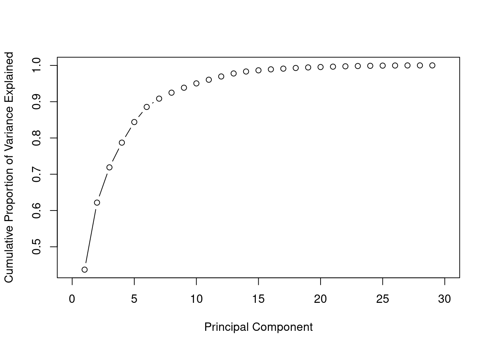
Construct new data set
We use the first 15 principle components as our new predictors, then we randomly split data into training and test set in 7:3 ratio.
set.seed(100)
train_sample <- sample(1:nrow(cancer), round(0.7*nrow(cancer)))
pcadat <- data.table( label = cancer$diagnosis, pca$x[,1:15])
pcadat[, label := factor(label, levels = c("M", "B"))]
train <- pcadat[train_sample,]
test <- pcadat[-train_sample,]Model Fitting
- Some of the importants terms to understand: Accuracy:
\[Accuracy = \frac{True\: positives+ True \; Negatives \;Classes}{N}\]
Precision: Of all the patients we predicted that they have cancer malignant how many actually have cancer \[Precision = \frac{True \; Positives}{Predicted \; Positives}\]
Recall(sensitivity): Of all the patients that have malignant cancer how many did we detect. This is the true positive rate \[Recall= \frac{True \; Positives}{Actual \; Positives}\]
Specifity is the true negative rate. Of all the patient who did not have malignant tumors how many did we detect \[Recall= \frac{True \; Negatives}{Actual \; Negatives}\]
Logistic regression
This is one of generalized linear models which deals with binary data. There is a generalization of this model which is called multinomial regression where you can fit multi class data. The equation for logistic regression model is:
\[log(\frac{p}{1-p}) = \beta_0 + \beta_1*X_1 + ... \beta_n * X_n\] and using mle the cost function can be derived as: \[J(\theta) = -\frac{1}{m}\sum_{i=1}^{m} y^i log(h_\theta(x^i)) + (1-y^i) log(1 - h_\theta(x^i))\] Given that \[y = 0\] \[y = 1\] . Finding \[\beta\] s we minimizing the cost function.
fit_glm <- glm(label ~., data = train, family = binomial)Warning: glm.fit: fitted probabilities numerically 0 or 1 occurredRegularization in logistic regression
The warning “glm.fit: fitted probabilities numerically 0 or 1 occurred” shows that there is a perfect separation/over fitting. In this case you can load glmnet library and fit a regularized logistic regression. These can be achieved by adding a regularization term to the cost function.The L1 regularization(Lasso) adds a penalty equal to the sum of the absolute values of the coefficients.
\[J(\theta) = -\frac{1}{m}\sum_{i=0}^{m} y^i log(h_\theta(x^i)) + (1-y^i) log(1 - h_\theta(x^i)) + \frac {\lambda}{2m}\sum_{j=1}^{n} |\theta^i|\]
trainx <- train[,-1]
y_train <- factor(train$label, levels = c("B", "M"), labels = 0:1)
#y <- as.numeric(as.character(y))
y_test <- factor(test$label, levels = c("B", "M"), labels = 0:1) %>% as.character() %>% as.numeric()
#ytest <- as.numeric(as.character(ytest))
testx <- data.matrix(test[, -1]) To find the optimal values \(\lambda\) we use cross validation. We choose \(\lambda\) which gives the highest cross validation accuracy.
cv_fold <- createFolds(train$label, k = 10)
myControl <- trainControl(
method = "cv",
number = 10,
summaryFunction = twoClassSummary,
savePredictions = "all",
classProbs = TRUE,
verboseIter = FALSE,
index = cv_fold,
allowParallel = TRUE
)
tuneGrid <- expand.grid(
alpha = 0:1,
lambda = seq(0.001, 1, length.out = 10))
glmnet_model <- train(
label ~.,
data = train,
method = "glmnet",
metric = "ROC",
trControl = myControl,
tuneGrid = tuneGrid
)s
plot(glmnet_model) 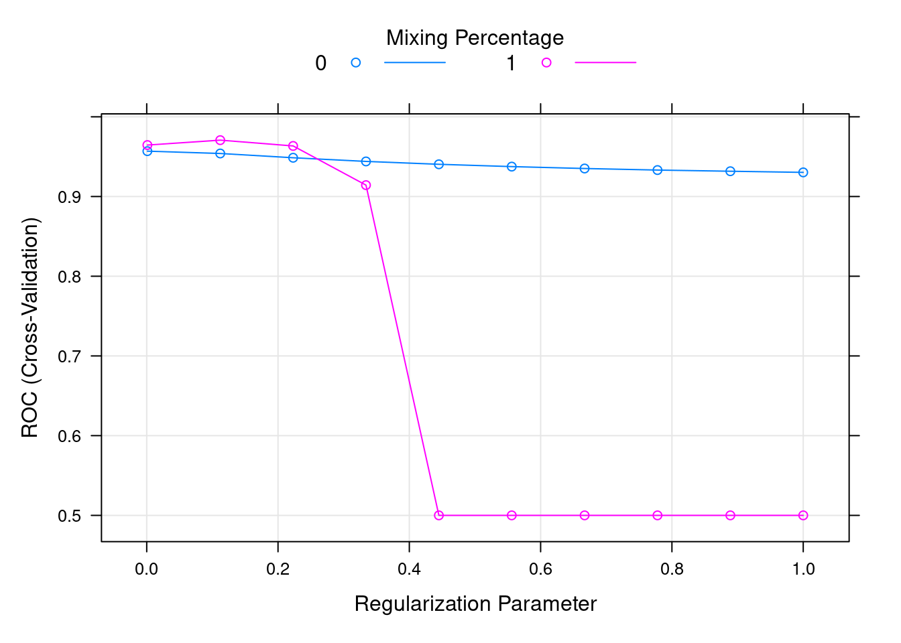
#lamda_min <- cv_glm$lambda.minresample_glmnet <- thresholder(glmnet_model,
threshold = seq(.2, 1, by = 0.05),
final = TRUE,
statistics = "all")
ggplot(resample_glmnet , aes(x = prob_threshold, y = F1)) +
geom_point() +
geom_point(aes(y = Sensitivity), col = "blue")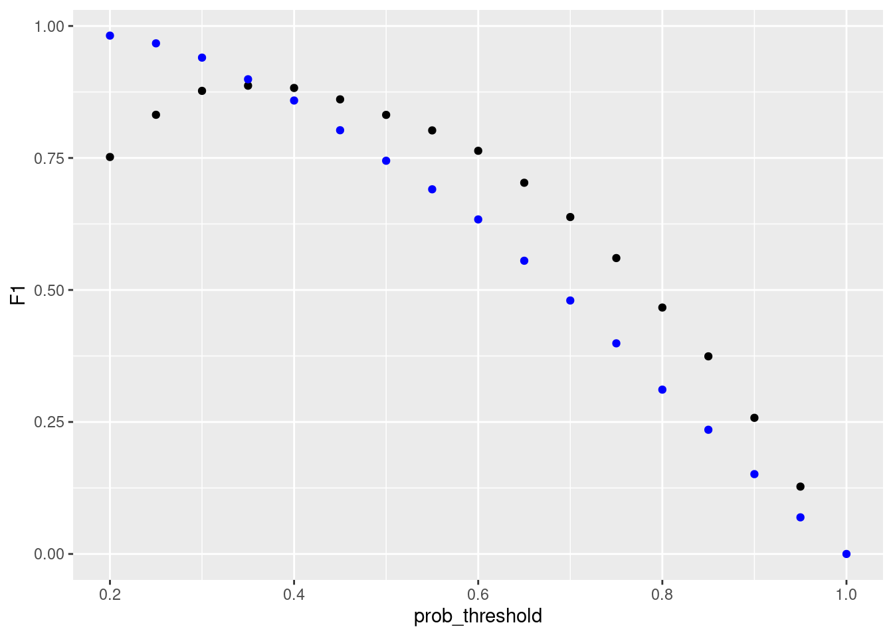
library(caTools)
pred_glm <- predict(glmnet_model, test, type = "prob")
colAUC(pred_glm , test$label, plotROC = TRUE)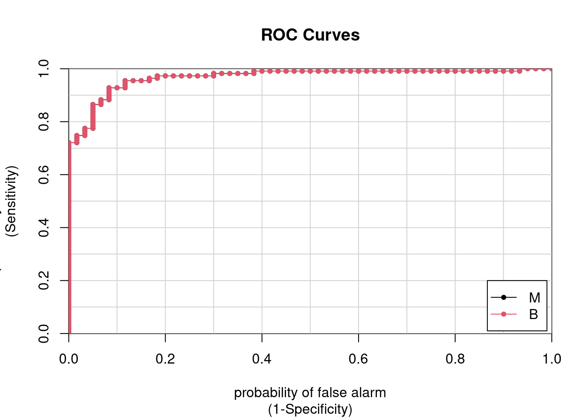
M B
M vs. B 0.9683 0.9683pred_glm1 <- ifelse(pred_glm[, "M"] > 0.4, "M", "B")
#pred_glm1 <- predict(glmnet_model, test, type = "raw")pred_glm1 <- factor(pred_glm1, levels = levels(test$label))confusionMatrix(pred_glm1, test$label,positive = "M") Confusion Matrix and Statistics
Reference
Prediction M B
M 53 7
B 7 104
Accuracy : 0.918
95% CI : (0.866, 0.955)
No Information Rate : 0.649
P-Value [Acc > NIR] : <2e-16
Kappa : 0.82
Mcnemar's Test P-Value : 1
Sensitivity : 0.883
Specificity : 0.937
Pos Pred Value : 0.883
Neg Pred Value : 0.937
Prevalence : 0.351
Detection Rate : 0.310
Detection Prevalence : 0.351
Balanced Accuracy : 0.910
'Positive' Class : M
SVM
Support Vector Machines is a type of supervised learning algorithm that is used for classification and regression. Most of the times however, it’s used for classification.
To understand how SVM works consider the following example of linearly separable data. It’s clear that we can separate the two classes using a straight line(decision boundary). Which is normally referred to a separating hyperplane.
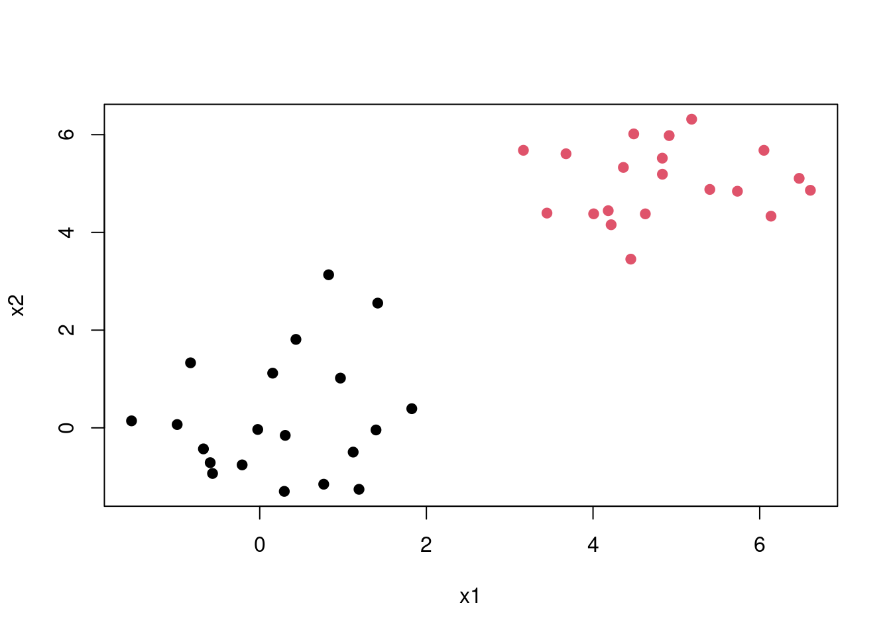
The question is, since there exists many lines that can separate the red and the black classes which is the best one. This introduces us to the maximal margin classification, In short SVM finds the hyperplane/line that gives the biggest margin/gap between the two classes. In this case SVM will choose the solid line as the hyperplane while the margins are the dotted lines. The circled points that lie directly on the margin, or on the wrong side of the margin for their class, are known as support vectors. This shows that SVM uses this points to come up with a the decision boundary, the other points are not used. In this case since it’s a two dimensional space the equation of the separating line will be \[\beta_0 + \beta_1X_1 + \beta_2X_2\]. Then when equations evaluates to more than 0 then 1 is predicted \[\beta_0 + \beta_1X_1 + \beta_2X_2 > 0, y = 1\] and when it evaluates to less than zero then predicted class is -1 \[\beta_0 + \beta_1X_1 + \beta_2X_2 < 0, \; y = -1\] This becomes maximisation problem \[width \; of \;the \; margin = M \] \[\sum_{j=1}^{n}\beta_j = 1\]
\[y_i(\beta_0 + \beta_1X_1 + \beta_2X_2) >= M\]
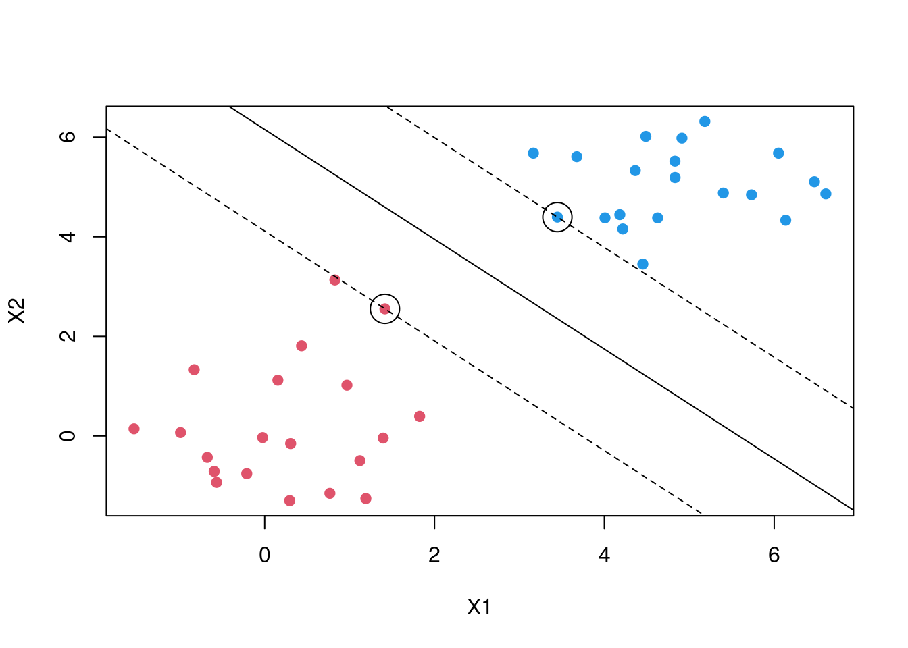
This is a best case scenario but in most cases the classes are noisy. Consider the plot below no matter which line you choose some points are bound to be on the wrong side of the desicion boundary. Thus maximal margin classification would not work.
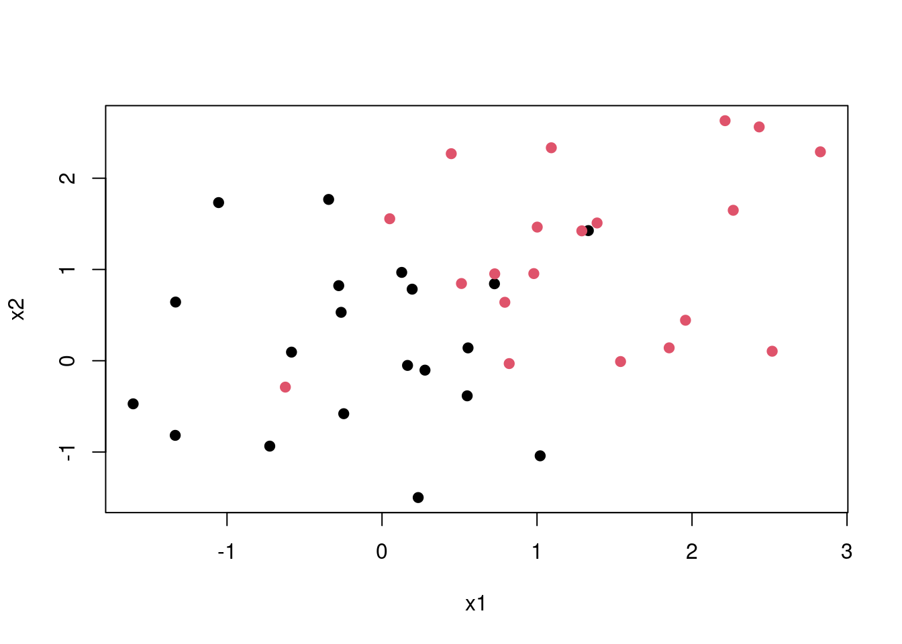
SVM then introduces what is called a soft margin. In naive explanation you can think of this as a margin that allows some points to be on the wrong side. By introducing an error term we allow for some slack. Thus in a two case the maximisation becomes \[y_i(\beta_0 + \beta_1X_1 + \beta_2X_2) >= M(1- \epsilon)\]
\[\sum_{i=0}^{n} \epsilon_i <= C\] C is a tuning parameter which determines the width of the margin while \[\epsilon_i \;'s\] are slack variables. that allow individual observations to fall on the wrong side of the margin. In some cases the decision boundary maybe non linear. In case your are dealing with logistic regression you will be forced to introduce polynomial terms which might result in a very large feature space. SVM then introduces what are called kernels
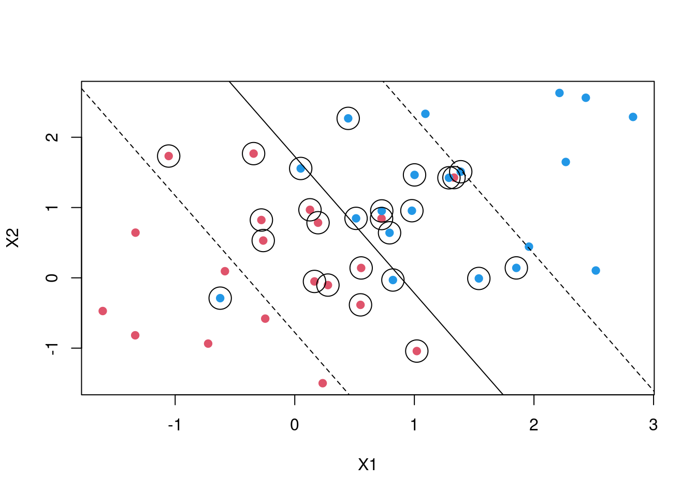
Tuning SVM
svm_tune <- expand.grid(
C =c(1 ,5 , 10, 100, 150),
sigma = seq(0, .01, length.out = 5))
svm_model <- train(
label ~.,
data = train,
metric="ROC",
method = "svmRadial",
trControl = myControl,
tuneGrid = svm_tune,
verbose = FALSE
)resample_svm <- thresholder(svm_model,
threshold = seq(.0, 1, by = 0.05),
final = TRUE,
statistics = "all")
ggplot(resample_svm , aes(x = prob_threshold, y = F1, col = "F1")) +
geom_point() +
geom_point(aes(y = Sensitivity, col = "Sensitivity"))+
scale_x_continuous(breaks = seq(0, 1, by = 0.1))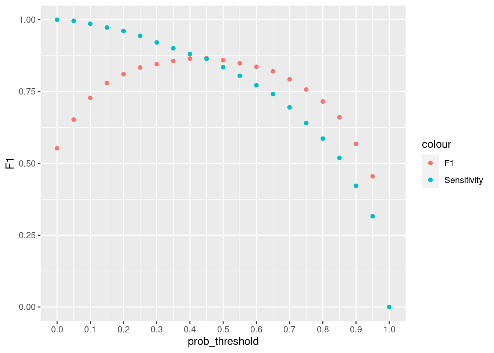
#mean(pred_svm == ytest)pred_svm <-predict(svm_model, newdata = test, type = "prob")
pred_svm <- ifelse(pred_svm[, "M"] > 0.40, "M", "B")
pred_svm <- factor(pred_svm, levels = levels(test$label))
confusionMatrix(test$label, pred_svm, positive = "M") Confusion Matrix and Statistics
Reference
Prediction M B
M 58 2
B 2 109
Accuracy : 0.977
95% CI : (0.941, 0.994)
No Information Rate : 0.649
P-Value [Acc > NIR] : <2e-16
Kappa : 0.949
Mcnemar's Test P-Value : 1
Sensitivity : 0.967
Specificity : 0.982
Pos Pred Value : 0.967
Neg Pred Value : 0.982
Prevalence : 0.351
Detection Rate : 0.339
Detection Prevalence : 0.351
Balanced Accuracy : 0.974
'Positive' Class : M
Xgboost
XGBoost is a type of an ensemble learner. Ensemble learning is where multiple machine learning algorithms are used at the same time for prediction. A good example will be Random Forests. In random Forest multiple decision trees are used together for prediction. There are two main types of ensemble learners, bagging and boosting. Random forest use the bagging approach. Trees are built from random subsets(rows and columns) of training set and then the final prediction is the weighted sum of all decision trees functions. Boosting methods are similar but in boosting samples are selected sequentially. For instance the first sample is selected and a decision tree is fitted, The model then picks the examples that were hard to learn and using this examples and a few others selected randomly from the training set the second model is fitted, Using the first model and the second model prediction is made, the model is evaluated and hard examples are picked and together with another randomly selected new examples from training set another model is trained. This is the process for boosting algorithms which continues for a specified number of n.
In gradient boosting the first model is fitted to the original training set. Let say your fitting a simple regression model for ease of explanation. Then your first model will be $ y = f(x) + $. When you find that the error is too large one of the things you might try to do is add more features, use another algorithm, tune your algorithm, look for more training data etc. But what if the error is not white noise and it has some relationship with output \(y\) . Then we can fit a second model. $ = f_1(x) + _1$. then this process can continue lets say until n times. Then the final model will be
$ n = f*{n}(x) + _{n-1}$.
Then the final step is to add this models together with some weighting criteria $ weights = ’s$ which gives us the final function used for prediction.
\(y = \alpha * f(x) + \alpha_1 * f_1(x) + \alpha_2 * f_2(x)...+ \alpha_n * f_n + \epsilon\)
# "subsample" is the fraction of the training samples (randomly selected) that will be used to train each tree.
# "colsample_by_tree" is the fraction of features (randomly selected) that will be used to train each tree.
# "colsample_bylevel" is the fraction of features (randomly selected) that will be used in each node to train each tree.
#eta learning rate
xgb_ctrl <- trainControl(method = "cv",
number = 5,
summaryFunction = twoClassSummary,
classProbs = TRUE,
allowParallel=T,
index = cv_fold,
verboseIter = FALSE,
savePredictions = TRUE,
search = "grid")
xgb_grid <- expand.grid(nrounds = c(10, 50, 100),
eta = seq(0.06, .2, length.out = 3),
max_depth = c(50, 80),
gamma = c(0,.01, 0.1),
colsample_bytree = c(0.6, 0.7,0.8),
min_child_weight = 1,
subsample = .7
)
xgb_model <-train(label~.,
data=train,
method="xgbTree",
trControl= xgb_ctrl,
tuneGrid=xgb_grid,
verbosity=0,
metric="ROC",
nthread =4
)Increasing cut of increases the precision. A greater fraction of those who will be predicted that they have cancer will turn out that they have, but the algorithm is likely to have lower recall. If we want to avoid too many cases of people cancer being predicted that they do not have cancer. It will be very bad to tell someone that they do not have cancer but they have. If we lower the probability let say to 0.3 then we want to make sure that even if there is a 30% chance you have cancer then you should be flagged.
resample_xgb <- thresholder(xgb_model,
threshold = seq(.0, 1, by = 0.01),
final = TRUE,
statistics = "all")
ggplot(resample_xgb , aes(x = prob_threshold, y = F1, col = "F1")) +
geom_point() +
geom_point(aes(y = Sensitivity, col = "Sensitivity"))+
scale_x_continuous(breaks = seq(0, 1, by =.1))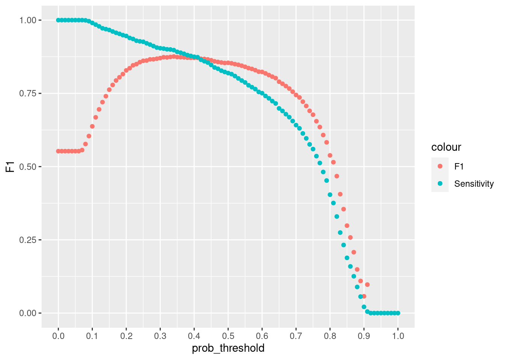
pred_xgb <-predict(xgb_model, newdata = test, type = "prob")
pred_xgb1 <- ifelse(pred_xgb[, "M"] > 0.4, "M", "B")
pred_xgb1 <- factor(pred_xgb1, levels = levels(test$label))
confusionMatrix(pred_xgb1,test$label, positive = "M") Confusion Matrix and Statistics
Reference
Prediction M B
M 59 2
B 1 109
Accuracy : 0.982
95% CI : (0.95, 0.996)
No Information Rate : 0.649
P-Value [Acc > NIR] : <2e-16
Kappa : 0.962
Mcnemar's Test P-Value : 1
Sensitivity : 0.983
Specificity : 0.982
Pos Pred Value : 0.967
Neg Pred Value : 0.991
Prevalence : 0.351
Detection Rate : 0.345
Detection Prevalence : 0.357
Balanced Accuracy : 0.983
'Positive' Class : M
Learning Curves
sets <- seq(from = 50, to = nrow(train), by = 50)
sets[length(sets)] <-nrow(train)
train.err <- c()
test.err<- c()
tune_grid <- expand.grid( nrounds = 50, max_depth = 50, eta = 0.06, gamma = 0.01,
colsample_bytree = 0.6, min_child_weight = 1, subsample = 0.7)
for (i in 1:length(sets)) {
traini = train[1:sets[i],]
fit_svm <- train(label ~., data = traini, metric="Accuracy", method = "svmRadial",
trControl = trainControl(method = "none", summaryFunction = twoClassSummary,
classProbs = TRUE),
tuneGrid = expand_grid( sigma = 0.0075, C = 5),
)
# fit_svm <-train(label~.,
# data=traini,
# method="xgbTree",
# trControl= xgb_ctrl,
# tuneGrid= tune_grid ,
# verbose=T,
# metric="ROC",
# nthread =3
#
# )
pred_train = predict(fit_svm, newdata = traini, type = "prob")
pred_train = ifelse(pred_train[["M"]] > 0.4, "M", "B")
train.err[i] =1 - mean(pred_train == traini$label)
pred_test = predict(fit_svm, newdata = test, type = 'prob')
pred_test = ifelse(pred_test[, "M"] > 0.4, "M", "B")
test.err[i] = 1 - mean(test$label == pred_test)
cat(i," ")
}1 2 3 4 5 6 7 train.err[1] 0.00000 0.03000 0.03333 0.01500 0.02000 0.02000 0.02261matplot(sets, cbind(test.err, train.err), pch = 19, col = c("red", "blue"),
type = "b", ylab = "Error", xlab = "Train sample size", main = "SVM Learning Curves")
legend("topright", legend = c("Test", "Train"), pch = 19, col = c("red", "blue"))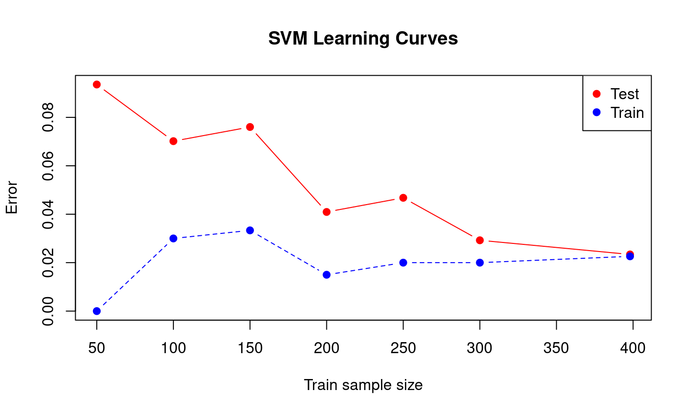
Error Analysis
Look at the examples that the algorithm misclassified to see if there is a trend. Generally you are trying to find out the weak points of your algorithm. Checking why your algorithm is making those errors. For instance, from the boxplots below the malignant tumors that were misclassified had lower radius mean compared to mislassified benign tumors. This contrary to what we saw in the first boxplots graph.
df <- data.frame(cancer[-train_sample,], pred_svm) %>%
setDT()
test_mis_svm <- df[(diagnosis == "M" & pred_svm == 0) |( diagnosis == "B" & pred_svm == "M")]# test_mis_svm_m <- melt(test_mis_svm,
# id.vars = c("diagnosis", "pred_svm"))
#
# ggplot(test_mis_svm_m , aes(x = pred_svm, y = value))+
# geom_boxplot() + facet_wrap(~variable, scales = "free_y")